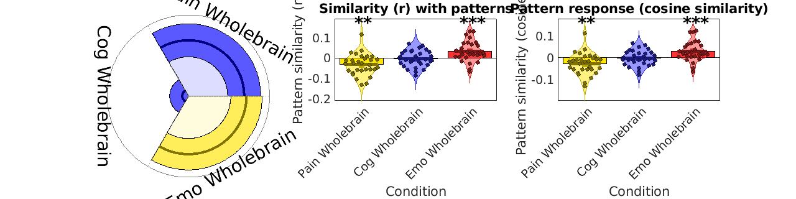

test_data_obj = load_image_set('emotionreg');
[obj, names] = load_image_set('pain_cog_emo');
bpls_wholebrain = get_wh_image(obj, [8 16 24]);
names_wholebrain = names([8 16 24]);
create_figure('Kragel Pain-Cog-Emo maps', 1, 3);
stats = image_similarity_plot(test_data_obj, 'average', 'mapset', bpls_wholebrain, 'networknames', names_wholebrain, 'nofigure');
axis image
subplot(1, 3, 2)
barplot_columns(stats.r', 'nofigure', 'colors', {[1 .9 0] [.2 .2 1] [1 .2 .2]}, 'names', names_wholebrain)
set(gca, 'FontSize', 14)
ylabel('Pattern similarity (r)');
title('Similarity (r) with patterns')
test_data_obj = resample_space(test_data_obj, bpls_wholebrain);
clear csim
for i = 1:3
csim(:, i) = canlab_pattern_similarity(test_data_obj.dat, bpls_wholebrain.dat(:, i), 'cosine_similarity');
end
subplot(1, 3, 3)
barplot_columns(csim, 'nofigure', 'colors', {[1 .9 0] [.2 .2 1] [1 .2 .2]}, 'names', names_wholebrain)
set(gca, 'FontSize', 14)
ylabel('Pattern similarity (cosine sim)');
title('Pattern response (cosine similarity)')
Loaded images:
/home/lukie/CanlabCore/CanlabCore/Sample_datasets/Wager_et_al_2008_Neuron_EmotionReg/Wager_2008_emo_reg_vs_look_neg_contrast_images.nii
/home/lukie/CanlabCore/CanlabCore/Sample_datasets/Wager_et_al_2008_Neuron_EmotionReg/Wager_2008_emo_reg_vs_look_neg_contrast_images.nii
/home/lukie/CanlabCore/CanlabCore/Sample_datasets/Wager_et_al_2008_Neuron_EmotionReg/Wager_2008_emo_reg_vs_look_neg_contrast_images.nii
/home/lukie/CanlabCore/CanlabCore/Sample_datasets/Wager_et_al_2008_Neuron_EmotionReg/Wager_2008_emo_reg_vs_look_neg_contrast_images.nii
/home/lukie/CanlabCore/CanlabCore/Sample_datasets/Wager_et_al_2008_Neuron_EmotionReg/Wager_2008_emo_reg_vs_look_neg_contrast_images.nii
/home/lukie/CanlabCore/CanlabCore/Sample_datasets/Wager_et_al_2008_Neuron_EmotionReg/Wager_2008_emo_reg_vs_look_neg_contrast_images.nii
/home/lukie/CanlabCore/CanlabCore/Sample_datasets/Wager_et_al_2008_Neuron_EmotionReg/Wager_2008_emo_reg_vs_look_neg_contrast_images.nii
/home/lukie/CanlabCore/CanlabCore/Sample_datasets/Wager_et_al_2008_Neuron_EmotionReg/Wager_2008_emo_reg_vs_look_neg_contrast_images.nii
/home/lukie/CanlabCore/CanlabCore/Sample_datasets/Wager_et_al_2008_Neuron_EmotionReg/Wager_2008_emo_reg_vs_look_neg_contrast_images.nii
/home/lukie/CanlabCore/CanlabCore/Sample_datasets/Wager_et_al_2008_Neuron_EmotionReg/Wager_2008_emo_reg_vs_look_neg_contrast_images.nii
/home/lukie/CanlabCore/CanlabCore/Sample_datasets/Wager_et_al_2008_Neuron_EmotionReg/Wager_2008_emo_reg_vs_look_neg_contrast_images.nii
/home/lukie/CanlabCore/CanlabCore/Sample_datasets/Wager_et_al_2008_Neuron_EmotionReg/Wager_2008_emo_reg_vs_look_neg_contrast_images.nii
/home/lukie/CanlabCore/CanlabCore/Sample_datasets/Wager_et_al_2008_Neuron_EmotionReg/Wager_2008_emo_reg_vs_look_neg_contrast_images.nii
/home/lukie/CanlabCore/CanlabCore/Sample_datasets/Wager_et_al_2008_Neuron_EmotionReg/Wager_2008_emo_reg_vs_look_neg_contrast_images.nii
/home/lukie/CanlabCore/CanlabCore/Sample_datasets/Wager_et_al_2008_Neuron_EmotionReg/Wager_2008_emo_reg_vs_look_neg_contrast_images.nii
/home/lukie/CanlabCore/CanlabCore/Sample_datasets/Wager_et_al_2008_Neuron_EmotionReg/Wager_2008_emo_reg_vs_look_neg_contrast_images.nii
/home/lukie/CanlabCore/CanlabCore/Sample_datasets/Wager_et_al_2008_Neuron_EmotionReg/Wager_2008_emo_reg_vs_look_neg_contrast_images.nii
/home/lukie/CanlabCore/CanlabCore/Sample_datasets/Wager_et_al_2008_Neuron_EmotionReg/Wager_2008_emo_reg_vs_look_neg_contrast_images.nii
/home/lukie/CanlabCore/CanlabCore/Sample_datasets/Wager_et_al_2008_Neuron_EmotionReg/Wager_2008_emo_reg_vs_look_neg_contrast_images.nii
/home/lukie/CanlabCore/CanlabCore/Sample_datasets/Wager_et_al_2008_Neuron_EmotionReg/Wager_2008_emo_reg_vs_look_neg_contrast_images.nii
/home/lukie/CanlabCore/CanlabCore/Sample_datasets/Wager_et_al_2008_Neuron_EmotionReg/Wager_2008_emo_reg_vs_look_neg_contrast_images.nii
/home/lukie/CanlabCore/CanlabCore/Sample_datasets/Wager_et_al_2008_Neuron_EmotionReg/Wager_2008_emo_reg_vs_look_neg_contrast_images.nii
/home/lukie/CanlabCore/CanlabCore/Sample_datasets/Wager_et_al_2008_Neuron_EmotionReg/Wager_2008_emo_reg_vs_look_neg_contrast_images.nii
/home/lukie/CanlabCore/CanlabCore/Sample_datasets/Wager_et_al_2008_Neuron_EmotionReg/Wager_2008_emo_reg_vs_look_neg_contrast_images.nii
/home/lukie/CanlabCore/CanlabCore/Sample_datasets/Wager_et_al_2008_Neuron_EmotionReg/Wager_2008_emo_reg_vs_look_neg_contrast_images.nii
/home/lukie/CanlabCore/CanlabCore/Sample_datasets/Wager_et_al_2008_Neuron_EmotionReg/Wager_2008_emo_reg_vs_look_neg_contrast_images.nii
/home/lukie/CanlabCore/CanlabCore/Sample_datasets/Wager_et_al_2008_Neuron_EmotionReg/Wager_2008_emo_reg_vs_look_neg_contrast_images.nii
/home/lukie/CanlabCore/CanlabCore/Sample_datasets/Wager_et_al_2008_Neuron_EmotionReg/Wager_2008_emo_reg_vs_look_neg_contrast_images.nii
/home/lukie/CanlabCore/CanlabCore/Sample_datasets/Wager_et_al_2008_Neuron_EmotionReg/Wager_2008_emo_reg_vs_look_neg_contrast_images.nii
/home/lukie/CanlabCore/CanlabCore/Sample_datasets/Wager_et_al_2008_Neuron_EmotionReg/Wager_2008_emo_reg_vs_look_neg_contrast_images.nii
Loaded images:
/home/lukie/Neuroimaging_Pattern_Masks/Multivariate_signature_patterns/2018_Kragel_MFC_Generalizability/bPLS_pMCC_Pain.nii
/home/lukie/Neuroimaging_Pattern_Masks/Multivariate_signature_patterns/2018_Kragel_MFC_Generalizability/bPLS_aMCC_Pain.nii
/home/lukie/Neuroimaging_Pattern_Masks/Multivariate_signature_patterns/2018_Kragel_MFC_Generalizability/bPLS_pACC_Pain.nii
/home/lukie/Neuroimaging_Pattern_Masks/Multivariate_signature_patterns/2018_Kragel_MFC_Generalizability/bPLS_sgACC_Pain.nii
/home/lukie/Neuroimaging_Pattern_Masks/Multivariate_signature_patterns/2018_Kragel_MFC_Generalizability/bPLS_vmPFC_Pain.nii
/home/lukie/Neuroimaging_Pattern_Masks/Multivariate_signature_patterns/2018_Kragel_MFC_Generalizability/bPLS_dMFC_Pain.nii
/home/lukie/Neuroimaging_Pattern_Masks/Multivariate_signature_patterns/2018_Kragel_MFC_Generalizability/bPLS_MFC_Pain.nii
/home/lukie/Neuroimaging_Pattern_Masks/Multivariate_signature_patterns/2018_Kragel_MFC_Generalizability/bPLS_Wholebrain_Pain.nii
/home/lukie/Neuroimaging_Pattern_Masks/Multivariate_signature_patterns/2018_Kragel_MFC_Generalizability/bPLS_pMCC_Cognitive_Control.nii
/home/lukie/Neuroimaging_Pattern_Masks/Multivariate_signature_patterns/2018_Kragel_MFC_Generalizability/bPLS_aMCC_Cognitive_Control.nii
/home/lukie/Neuroimaging_Pattern_Masks/Multivariate_signature_patterns/2018_Kragel_MFC_Generalizability/bPLS_pACC_Cognitive_Control.nii
/home/lukie/Neuroimaging_Pattern_Masks/Multivariate_signature_patterns/2018_Kragel_MFC_Generalizability/bPLS_sgACC_Cognitive_Control.nii
/home/lukie/Neuroimaging_Pattern_Masks/Multivariate_signature_patterns/2018_Kragel_MFC_Generalizability/bPLS_vmPFC_Cognitive_Control.nii
/home/lukie/Neuroimaging_Pattern_Masks/Multivariate_signature_patterns/2018_Kragel_MFC_Generalizability/bPLS_dMFC_Cognitive_Control.nii
/home/lukie/Neuroimaging_Pattern_Masks/Multivariate_signature_patterns/2018_Kragel_MFC_Generalizability/bPLS_MFC_Cognitive_Control.nii
/home/lukie/Neuroimaging_Pattern_Masks/Multivariate_signature_patterns/2018_Kragel_MFC_Generalizability/bPLS_Wholebrain_Cognitive_Control.nii
/home/lukie/Neuroimaging_Pattern_Masks/Multivariate_signature_patterns/2018_Kragel_MFC_Generalizability/bPLS_pMCC_Negative_Emotion.nii
/home/lukie/Neuroimaging_Pattern_Masks/Multivariate_signature_patterns/2018_Kragel_MFC_Generalizability/bPLS_aMCC_Negative_Emotion.nii
/home/lukie/Neuroimaging_Pattern_Masks/Multivariate_signature_patterns/2018_Kragel_MFC_Generalizability/bPLS_pACC_Negative_Emotion.nii
/home/lukie/Neuroimaging_Pattern_Masks/Multivariate_signature_patterns/2018_Kragel_MFC_Generalizability/bPLS_sgACC_Negative_Emotion.nii
/home/lukie/Neuroimaging_Pattern_Masks/Multivariate_signature_patterns/2018_Kragel_MFC_Generalizability/bPLS_vmPFC_Negative_Emotion.nii
/home/lukie/Neuroimaging_Pattern_Masks/Multivariate_signature_patterns/2018_Kragel_MFC_Generalizability/bPLS_dMFC_Negative_Emotion.nii
/home/lukie/Neuroimaging_Pattern_Masks/Multivariate_signature_patterns/2018_Kragel_MFC_Generalizability/bPLS_MFC_Negative_Emotion.nii
/home/lukie/Neuroimaging_Pattern_Masks/Multivariate_signature_patterns/2018_Kragel_MFC_Generalizability/bPLS_Wholebrain_Negative_Emotion.nii
Table of correlations Group:1
--------------------------------------
T-test on Fisher's r to Z transformed point-biserial correlations
R_avg T P sig
Pain Wholebrain -0.0313 -3.3659 0.0022 1.0000
Cog Wholebrain -0.0034 -0.4795 0.6352 0.0000
Emo Wholebrain 0.0326 3.6973 0.0009 1.0000
Col 1: Pain Wholebrain Col 2: Cog Wholebrain Col 3: Emo Wholebrain
---------------------------------------------
Tests of column means against zero
---------------------------------------------
Name Mean_Value Std_Error T P Cohens_d
_________________ __________ _________ ________ __________ _________
'Pain Wholebrain' -0.031344 0.0093007 -3.3701 0.0021409 -0.61529
'Cog Wholebrain' -0.0034143 0.0071259 -0.47913 0.63544 -0.087478
'Emo Wholebrain' 0.032647 0.0088234 3.7 0.00089741 0.67553
ans =
struct with fields:
fig_han: [1×1 struct]
axis_han: [1×1 Axes]
bar_han1: [1×1 Bar]
bar_han: {[1×1 Bar] [1×1 Bar] [1×1 Bar]}
errorbar_han: {[1×1 ErrorBar] [1×1 ErrorBar] [1×1 ErrorBar]}
point_han1: {30×3 cell}
point_han: {30×3 cell}
star_handles: [3.0005 4.0005 5.0005]
Col 1: Pain Wholebrain Col 2: Cog Wholebrain Col 3: Emo Wholebrain
---------------------------------------------
Tests of column means against zero
---------------------------------------------
Name Mean_Value Std_Error T P Cohens_d
_________________ __________ _________ ________ _________ _________
'Pain Wholebrain' -0.0277 0.0088243 -3.139 0.0038755 -0.57311
'Cog Wholebrain' -0.0024414 0.0064192 -0.38032 0.70648 -0.069437
'Emo Wholebrain' 0.028817 0.0081249 3.5468 0.0013476 0.64756
ans =
struct with fields:
fig_han: [1×1 struct]
axis_han: [1×1 Axes]
bar_han1: [1×1 Bar]
bar_han: {[1×1 Bar] [1×1 Bar] [1×1 Bar]}
errorbar_han: {[1×1 ErrorBar] [1×1 ErrorBar] [1×1 ErrorBar]}
point_han1: {30×3 cell}
point_han: {30×3 cell}
star_handles: [6.0005 7.0005 8.0005]
